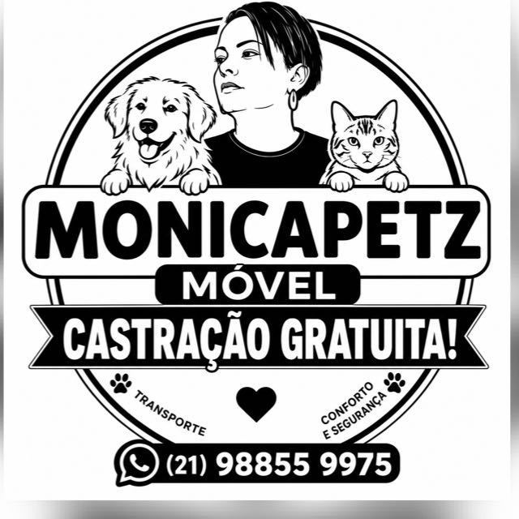

🐕
Castração gratuita
Informações sobre a iniciativa de castração gratuita para cães e gatos. A participação está sujeita à confirmação de critérios e vagas.
Castração gratuita para cães e gatos, com atenção ao bem-estar dos pets. Conte com um atendimento que valoriza conforto, transporte e segurança.

A Monicapetz Móvel divulga castração gratuita e destaca transporte, conforto e segurança. Consulte diretamente a equipe para confirmar agenda, regras e disponibilidade.
Informações sobre a iniciativa de castração gratuita para cães e gatos. A participação está sujeita à confirmação de critérios e vagas.
O transporte é um dos diferenciais anunciados. Confirme com a equipe se o serviço atende sua região e como funciona.
O bem-estar do seu companheiro merece atenção em todas as etapas. Tire suas dúvidas diretamente com os responsáveis.
A castração pode ajudar a prevenir algumas doenças, evitar crias não planejadas e contribuir para o controle populacional de animais. Um veterinário deve avaliar cada caso.
Para saber como participar, siga estes passos. O procedimento exato e a elegibilidade devem ser confirmados com a equipe.
Envie uma mensagem no WhatsApp contando sobre seu pet.
Confirme datas, locais, requisitos e disponibilidade.
Pergunte sobre avaliação veterinária, preparo e transporte.
Siga todas as recomendações fornecidas pelo profissional veterinário.
O material divulgado apresenta um telefone com DDD 21, mas não informa endereço fixo ou calendário de atendimento. O mapa ao lado mostra apenas uma referência geral do Rio de Janeiro, não o local da unidade móvel.
📍 Consultar próximo localA equipe deverá confirmar onde e quando haverá atendimento.
O anúncio da Monicapetz Móvel informa “castração gratuita”. Consulte a equipe para confirmar as condições, os critérios de participação e possíveis serviços não incluídos.
O material apresenta cães e gatos. Entre em contato para confirmar espécies atendidas, idade, peso e critérios de saúde.
O transporte é mencionado no anúncio, mas não há detalhes sobre cobertura e disponibilidade. Pergunte pelo WhatsApp se sua região está incluída.
Não há endereço nem calendário de atendimentos na imagem. Solicite a localização e a próxima data diretamente pelo WhatsApp.
Não inicie jejum por conta própria. Peça instruções específicas da equipe veterinária, pois idade, condições de saúde e protocolo podem mudar a orientação.
Conte um pouquinho sobre seu cão ou gato. Vamos preparar uma mensagem para você enviar diretamente à Monicapetz Móvel.
(21) 98855-9975 ↗Atendimento, horários, vagas e regiões a confirmar com a equipe.